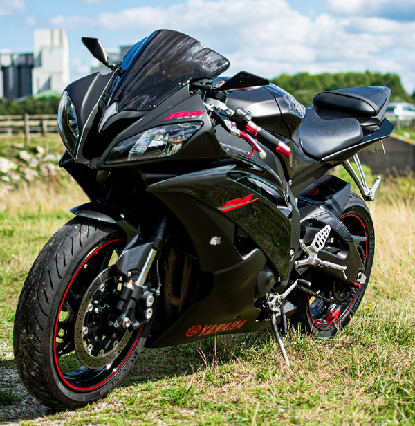

The "LEGENDARY" Yamaha YZF-R6
The Yamaha YZF-R6 (2006–2016) is a legendary supersport motorcycle that set the standard for precision, agility, and high-revving performance in the 600cc class. The 2006 model introduced significant upgrades, including a lightweight aluminum frame, an aggressive aerodynamic design, and a 599cc DOHC inline-four engine capable of revving up to 16,500 rpm (later adjusted for accuracy). Producing around 123 horsepower at 14,500 rpm, the R6 delivered razor-sharp throttle response, thanks to Yamaha’s advanced ride-by-wire system (YCC-T). In 2008, Yamaha introduced the Chip Controlled Intake (YCC-I), which optimized airflow for improved midrange and top-end power. The fully adjustable 41mm inverted front forks, rear monoshock, and rigid chassis ensured exceptional handling, making the R6 a dominant force on the track and in aggressive street riding. Its braking system, featuring dual 310mm front discs with radial-mounted calipers and a 220mm rear disc, provided strong and precise stopping power. Designed with racing in mind, the R6 had a high seat height, low clip-on handlebars, and a committed riding position that emphasized control but made it less practical for long rides. Yamaha continuously refined the R6 throughout this period, enhancing fuel mapping, suspension tuning, and overall performance. By 2016, it remained one of the most sought-after supersport bikes, praised for its sharp handling, screaming top-end power, and race-ready DNA. Even after newer models arrived, the 2006–2016 R6 remained a favorite among purists seeking an exhilarating, no-compromise riding experience.